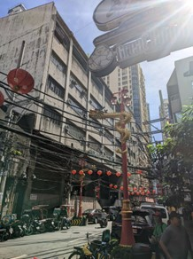
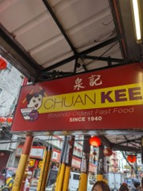

Breakfast at Binondo’s
by Lim, Josh | July 24, 2025
From the lively dragon dances in the streets that pass you by to the spaghetti wires that give “The Oldest Chinatown” its charm—these were the details that stuck with me from my trip to Binondo.
The trip began when my family and I took a Grab from Caloocan and were dropped off at the plaza beside the church. Our first destination was the Minor Basilica and National Shrine of Saint Lorenzo Ruiz—or simply Binondo Church, if you’re like me and can’t remember the full name. I was fascinated by its Renaissance architecture, especially the facade of St. Peter’s Basilica behind the altar—a marvelous spectacle I hope to visit in person someday.
After that, we walked along Ongpin Street and saw the bustling scene of street vendors selling everything from steaming hot siopao to glistening gold jewelry. The presence of cars on the sidewalk irked me as a long-time advocate for pedestrian-friendly streets, along with the spaghetti wires that have plagued Binondo since time immemorial.

Our food journey began when my parents brought us to a well-known restaurant called Chuan Kee Fast Food. The line was long—but was the wait worth it? It looked like an ordinary carinderia, except with TVs for menus and promotional videos from influencer vlogs. We waited 40 minutes in line and another 10 minutes for the food to be served. The food was good—we had beef mami and their signature fried rice. For a first-time experience, I’d say it’s worth trying once. However, I wouldn’t return; the long line alone is enough to keep me away. It felt more like a tourist trap.

Next, we tried some of Binondo’s iconic street food. We bit into the famous Shanghai Fried Siopao. It was delicious, and the portion size was great for the price. The filling was unctuous and deeply umami, perfectly complemented by the toothsome bun.
After that, we headed to Eng Bee Tin, the go-to store for hopia and tikoy, to buy pasalubong. I was surprised to see it packed with people—there was even a tour guide inside. Seriously? The Kapampangan equivalent would be if a tour guide visited Susie’s Cuisine. Regardless, after savoring our last bites, we took a few photos with the Buddha statue and began making our way out.
We walked a few meters back to the plaza, and before we knew it, we were in a Grab headed back to Caloocan. I felt like Binondo still had so much more to offer, but we only had so much time to explore. After all, our goal was just to eat breakfast and stroll through the district. The trip may have been short-lived, but it was worth every second—especially every bite.
Back to top